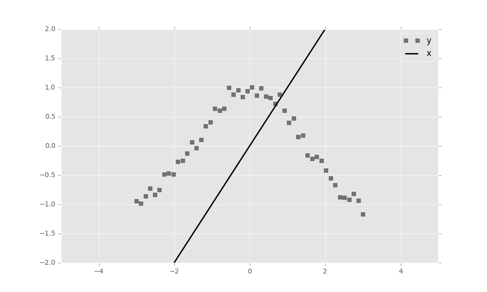

Edward
 Home
Getting Started
Delving In
Tutorials
API
Advanced
Design Philosophy
Developer Process
Troubleshooting
License
Home
Getting Started
Delving In
Tutorials
API
Advanced
Design Philosophy
Developer Process
Troubleshooting
License

Getting Started
Getting started with Edward is easy.
Quick Installation
To install the latest stable version, run
pip install edwardTo install the latest development version, run
pip install -e "git+https://github.com/blei-lab/edward.git#egg=edward"See the troubleshooting page for detailed installation instructions.
Your first Edward program
Let’s use Edward to fit a simple Bayesian neural network regression model.
First, import Edward, TensorFlow, and Numpy.
import edward as ed
import tensorflow as tf
import numpy as np Now, consider the likelihood of an observation \((y_n, x_n)\) \[\begin{aligned} p(y_n \mid \mathbf{z} \;;\; x_n, \sigma^2) &= \mathcal{N}(y_n \;;\; \mu(x_n\;;\;\mathbf{z}), \sigma^2)\end{aligned}\] where \(\mu\) is a neural network with weights (latent variables) \(\mathbf{z}\). Here \(x_n\) is the (known) covariate and \(\sigma^2\) is the (known) variance of the observation.
A Bayesian neural network further posits a prior on the weights. Assuming an independent standard normal prior gives the following joint density \[\begin{aligned} p(\mathbf{z}, \mathbf{y} \;;\; \mathbf{x}, \sigma^2) &= \mathcal{N}(\mathbf{z} \;;\; \mathbf{0}, I) \times \prod_{n=1}^N \mathcal{N}(y_n \;;\; \mu(x_n\;;\;\mathbf{z}), \sigma^2).\end{aligned}\]
Here is one way to write this model in Edward. (This is abridged; full code HERE.)
class BayesianNN:
"""A Bayesian neural network regression model (abridged)"""
def log_prob(self, xs, zs):
# Specify the prior
log_prior = tf.reduce_sum(norm.logpdf(zs, loc=0, scale=1), 1)
# Extract (y,x) from data
y = xs[:, 0]
x = xs[:, 1:]
# Specify mu (neural network)
mus = tf.pack([self.mapping(x, z) for z in tf.unpack(zs)])
# Specify the likelihood
log_lik = tf.reduce_sum(norm.logpdf(y, loc=mus, scale=self.lik_variance), 1)
return log_prior + log_likInstantiating this model as
model = BayesianNN(layer_sizes=[1, 2, 2, 1])defines a two-layer a Bayesian neural network regression model with \(\tanh\) activation functions. Specifically \[\begin{aligned} h_{11} &= \tanh(w_{11} x_n + b_{11})\\ h_{12} &= \tanh(w_{12} x_n + b_{12})\\ h_{21} &= \tanh(w_{211} h_{11} + w_{212} h_{12} + b_{21})\\ h_{22} &= \tanh(w_{211} h_{11} + w_{212} h_{12} + b_{22})\\ \mu &= \tanh(w_{31} h_{21} + w_{32} h_{22} + b_3)\end{aligned}\] where \(\mathbf{z} = (w_{1:}, w_{2::}, w_{3:}, b_{1:}, b_{2:}, b_3)\).
Next, specify a variational approximation to the posterior. A mean-field normal approximation is reasonable.
variational = Variational()
variational.add(Normal(model.num_vars)) Finally, simulate a toy dataset of 50 observations with a cosine nonlinearity and some measurement noise.
def build_toy_dataset(n_data=50, noise_std=0.1):
x = np.linspace(-3, 3, num=n_data)
y = np.cos(x)
y = y + norm.rvs(0, noise_std, size=n_data).reshape((n_data,))
x = x.reshape((n_data, 1))
y = y.reshape((n_data, 1))
data = np.concatenate((y, x), axis=1)
data = tf.constant(data, dtype=tf.float32)
return ed.Data(data) Plotting the data shows the relationship between \(x\) and \(y\).

We now have all the ingredients to infer the posterior of this model. Edward Inference classes take three things as input: a probability model, a variational model, and data. Here we run mean-field variational inference for 1000 iterations, by subsampling 5 datapoints at each iteration. We also print a status report to the terminal every 100 iterations
inference = ed.MFVI(model, variational, data)
inference.run(n_iter=1000, n_minibatch=5, n_print=100) Drawing samples from the posterior shows how the neural network has adapted to the cosine nonlinearity.

To learn more about Edward, delve in!
If you prefer to learn via examples, then check out our tutorials.